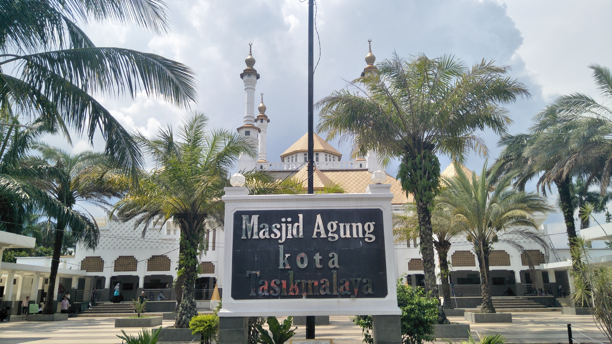

Sejarah
Sejarah berdirinya Kota Tasikmalaya sebagai daerah otonomi tidak terlepas dari sejarah berdirinya kabupaten Tasikmalaya sebagai daerah kabupaten induknya. Sebelumnya, kota ini merupakan ibukota dari kabupaten Tasikmalaya, kemudian meningkat statusnya menjadi kota administratif tahun 1976, pada waktu A. Bunyamin menjabat sebagai Bupati Tasikmalaya, dan kemudian menjadi pemerintahan kota yang mandiri pada masa Pemerintahan Kabupaten Tasikmalaya dipimpin oleh bupatinya saat itu H. Suljana W.H.
Sang Mutiara dari Priangan Timur itulah julukan bagi kota Tasikmalaya. Kota Tasikmalaya adalah salah satu kota di Provinsi Jawa Barat. Kota ini terletak pada 108° 08? 38? – 108° 24? 02? BT dan 7° 10? – 7° 26? 32? LS di bagian Tenggara wilayah Propinsi Jawa Barat. Kota ini dahulu adalah sebuah kabupaten, namun seiring dengan perkembangan, maka terbentuklah 2 buah bentuk pemerintahan yaitu Pemerintahan Kabupaten dan Pemerintahan Kota Tasikmalaya.
Tonggak sejarah lahirnya kota Tasikmalaya, mulai di gulirkan ketika Kabupaten Tasikmalaya di pimpin oleh A. Bunyamin, Bupati Tasikmalaya periode tahun 1976 – 1981. Pada saat itu melalui peraturan Pemerintah Nomor 22 Tahun 1976 diresmikanlah Kota Administratif Tasikmalaya oleh Menteri Dalam Negeri yang pada waktu itu dijabat oleh H. Amir Machmud. Walikota Administratif pertama adalah Drs. H. Oman Roosman, yang dilantik oleh Gubernur Jawa barat, H. Aang Kunaefi.
Pada awal pembentukannya, wilayah kota Administratif Tasikmalaya meliputi 3 Kecamatan yaitu Cipedes, Cihideung dan Tawang dengan jumlah desa sebanyak 13 desa. Kemudian pada tahun 2001, dirintislah pembentukan Pemerintah Kota Tasikmalaya oleh Bupati Tasikmalaya, Kol. Inf. H. SuIjana Wirata Hadisubrata (1996 – 2001), dengan membentuk sebuah Tim Sukses Pembentukan Pemerintah Kota Tasikmalaya yang diketuai oleh H. Yeng Ds. Partawinata SH. Melalui proses panjang akhirnya dibawah pimpinan Bupati Drs. Tatang Farhanul Hakim, pada tanggal 17 Oktober 2001 melalui Undang-undang Nomor 10 Tahun 2001, Pembentukan pemerintahan Kota Tasikmalaya sebagai pemerintahan daerah otonom ditetapkan oleh Menteri Dalam Negeri atas nama Presiden RI di Jakarta bersama-sama dengan kota Lhoksumawe, Langsa, Padangsidempuan, Prabumulih, Lubuk Linggau, Pager Alam, Tanjung Pinang, Cimahi, Batu, Sikawang dan Bau-bau. Selanjutnya pada tanggal 18 Oktober 2001 pelantikan Drs. H. Wahyu Suradiharja sebagai Pejabat Walikota Tasikmalaya oleh Gubernur Jawa Barat dilaksanakan di Gedung Sate Bandung.
Melalui Surat Keputusan No. 133 Tahun 2001, tanggal 13 Desember 2001 Komisi Pemilihan Umum membentuk Panitia Pengisian Keanggotaan Dewan Perwakilan Rakyat Kota Tasikmalaya (PPK-DPRD), selanjutnya pengangkatan anggota DPRD Kota Tasikmalaya disahkan melalui Keputusan Gubernur Jawa Barat, No. 171/Kep.380/Dekon/2002, tanggal 26 April 2002, dan pada tanggal 30 April 2002 keanggotaan DPRD Kota Tasikmalaya pertama diresmikan. Kemudian pada tanggal 14 November 2002, Drs. H. Bubun Bunyamin dilantik sebagai Walikota Tasikmalaya, sebagai hasil dari tahapan proses pemilihan yang dilaksanakan oleh legislatif.
Sesuai Undang-Undang No. 10 Tahun 2001 bahwa wilayah Kota Tasikmalaya terdiri dari 8 Kecamatan dengan jumlah Kelurahan sebanyak 15 dan Desa sebanyak 54, tetapi dalam perjalanannya melalui Perda No. 30 Tahun 2003 tentang perubahan status Desan menjadi Kelurahan, desa-desa dilingkungan Pemerintah Kota Tasikmalaya berubah statusnya menjadi Kelurahan, oleh karena itu maka jumlah kelurahan menjadi sebanyak 69 kelurahan, sedangkan kedelapan kecamatan tersebut antara lain :Kecamatan Tawang Kecamatan Cihideung Kecamatan Cipedes Kecamatan Indihiang Kecamatan Kawalu Kecamatan Cibeureum Kecamatan Mangkubumi Kecamatan Tamansari.
Berikut ini urutan pemegang jabatan Walikotatif Tasikmalaya dari terbentuknya kota administratif sampai menjelang terbentuknya pemerintah Kota Tasikmalaya :
| Oman Roesman |
Yeng Partawinata |
R. Y. Wahyu |
Erdhi Hardhiana |
Bubun Bunyamin |
Drs. H. Syarif Hidayat M.Si |
Drs. H. Budi Budiman |
| 1976-1985 |
1985-1989 |
1989-1992 |
1992-1999 |
1999-2007 |
2007-2012 |
2012-2017 |
Visi
KOTA TASIKMALAYA YANG RELIGIUS, MAJU DAN MADANI.
Misi
Mewujudkan tata nilai kehidupan masyarakat yang religius dan berkearifan lokal.
Memantapkan infrastruktur dasar perkotaan guna mendorong pertumbuhan dan pemerataan pembangunan yang berwawasan lingkungan.
Mengurangi tingkat kemiskinan dan meningkatkan daya beli masyarakat.
Memenuhi kebutuhan pelayanan dasar masyarakat untuk meningkatkan kualitas sumber daya manusia.
Meningkatkan tata kelola pemerintah yang baik dan bersih.
Geografi
Kondisi Geografis Daerah Berdasarkan UU No. 10 tahun 2001 tentang Pembentukan Kota Tasikmalaya, pada tanggal 17 Oktober 2001, Menteri Dalam Negeri Hari Sabarno atas nama Presiden RI meresmikan pembentukan Pemerintah Kota Tasikmalaya dengan menandatangani Prasasti yang sekarang diletakkan di Balekota Jalan Letnan Harun No. 1 Kota Tasikmalaya.Sebagaimana tertuang dalam UU No. 10 tahun 2001 Pemerintah Kota Tasikmalaya pada awal terbentuknya mempunyai 8 wilayah Kecamatan dengan 15 Kelurahan di 3 wilayah Kecamatan eks Kotif dan 54 Desa di 5 wilayah Kecamatan, sedangkan ketentuan peralihan pasal 126 ayat 2 UU tahun 1999 mengamanatkan bahwa desa-desa yang ada dalam wilayah Kotamadya, Kotamadya Administratif, dan Kota Administratif berdasarkan Undang-undang Nomor 5 Tahun 1974 pada saat mulai berlakunya UU No. 22 tahun 1999 ditetapkan menjadi Kelurahan sebagai upaya meningkatkan kelancaran penyelenggaraan pemerintah dan pembangunan serta peningkatan pelayanan terhadap masyarakat.Penetapan perubahan status desa menjadi kelurahan dituangkan dalam Perda nomor 30 tahun 2003 tanggal 31 Oktober 2003.
Dengan Perda tersebut maka Kota Tasikmalaya memiliki wilayah dengan jumlah 69 kelurahan. Berdasarkan Perda Nomor 6 Tahun 2008 tentang pembentukan Kecamatan Bungursari dan Kecamatan Purbaratu yang merupakan pemekaran dari Kecamatan Indihiang dan Kecamatan Cibeureum, dengan demikian jumlah Kecamatan di Wilayah Pemerintah Kota Tasikmalaya menjadi 10 Kecamatan. Untuk keberlangsunagan penyelenggaraan Pemerintah Kota Tasikmalaya, maka tanggal 18 Oktober 2001, Gubernur Jawa Barat R.Nuriana melantik Drs. H. Wahyu Suradiharja sebagai Pj. Wali Kota Tasikmalaya di Gedung Sate Bandung. Pada Tanggal 14 Nopember 2002, Gubernur Jawa Barat R.Nuriana melantik Drs. H.Bubun Bunyamin dan Drs. H. Syarif Hidayat, M.Si sebagai Wali Kota dan Wakil Wali Kota definitif periode 2002-2007 untuk pertama kali di Gedung DPRD Kota Tasikmalaya.Pada Pilkada tanggal 9 September 2007 tepilih Drs. H. Syarif Hidayat, M.Si dan Ir. H. Dede Sudrajat, MP sebagai Wali Kota dan Wakil Wali Kota Tasikmalaya yang dipilih secara langsung oleh rakyat untuk periode Tahun 2007-2012 dan dilantik pada tanggal 14 Nopember 2007.
Pada tanggal 9 Juli 2012 pesta demokrasi pemilihan Wali Kota dan Wakil Wali Kota periode Tahun 2012-2017 menetapkan Drs. H. Budi Budiman dan Ir. H. Dede Sudrajat, MP terpilih menjadi Wali Kota dan Wakil Wali Kota Tasikmalaya dan dilantik pada tanggal 14 Nopember 2012 oleh Gubernur Jawa Barat H. Ahmad Heryawan,Lc. Selanjutnya, pada pemilihan Wali Kota dan Wakil Wali kota Tahun 2017, pasangan Drs. H. Budi Budiman dan HM Yusuf terpilih menjadi pemenang. Setelah 9 bulan ditetapkan sebagai pemenang, tanggal 14 November pasangan Drs. H. Budi Budiman dan HM Yusuf dilantik sebagai Wali Kota dan Wakil Wali Kota Tasikmalaya periode 2017-2022 di Gedung Sate Bandung oleh Gubernur Jawa Barat, Ahmad Heryawan.Kota Tasikmalaya merupakan salah satu Kota yang berada dibagian Tenggara Provinsi Jawa Barat dengan jarak ± 105 Km dari Kota Bandung dan ± 255 Km dari Kota Jakarta. Memiliki luas 18.385 Ha (183,85 Km2) dan jumlah 10 Kecamatan, 69 Kelurahan, 847 RW dan 3.553 RT.
Sebelah UTARA berbatasan dengan Kecamatan Cisayong dan Kecamatan Sukaratu Kabupaten Tasikmalaya, Kecamatan Cihaurbeuti, Kecamatan Sindangkasih dan Kecamatan Cikoneng Kabupaten Ciamis dengan batas fisik Sungai Citanduy.
Sebelah SELATAN berbatasan Kecamatan Jatiwaras dan Kecamatan Sukaraja Kabupaten Tasikmalaya.
Sebelah TIMUR Kecamatan Manonjaya dan Gunung Tanjung Kabupaten Tasikmalaya dengan batas fisik saluran irigasi Cikunten II dan Sungai Cileuwimunding.
Sebelah BARAT berbatasan dengan Kecamatan Singaparna, Kecamatan Sukarame, dan Kecamatan Sukaraja, Kecamatan Sukaratu, Kecamatan Leuwisari Kabupaten Tasikmalaya dengan batas fisik Sungai Ciwulan.
Demografi
Kondisi demografi mempunyai peranan penting terhadap perkembangan dan pertumbuhan suatu wilayah karena faktor demografi ikut mempengaruhi pemerintah dalam menentukan kebijakan-kebijakannnya. Dalam pelaksanaan pembangunan, penduduk merupakan faktor yang sangat dominan. Penduduk tidak saja berperan sebagai sasaran pembangunan tetapi juga menjadi pelaksana pembangunan. Oleh sebab itu, perkembangan penduduk harus diarahkan pada peningkatan kualitas, pengendalian kuantitas serta pengarahan mobilitasnya yang menunjang tercapainya keberhasilan pembangunan, yaitu meningkatkan kesejahteraan penduduk. Penduduk dalam suatu daerah merupakan potensi sumber daya manusia (SDM) yang dibutuhkan dalam proses pembangunan dalam pengelolaan sumber daya alam (SDA), selain juga sebagai konsumen dalam pembangunan.
Dalam peran ganda ini sudah sepatutnya pembahasan tentang dinamika penduduk dalam pembangunan dapat dicermati sesuai dengan ukuran kualitas dan kuantitasnya. Setiap tahun jumlah penduduk di Kota Tasikmalaya terus mengalami peningkatan. Penduduk Kota Tasikmalaya berdasarkan proyeksi penduduk tahun 2022 sebanyak 746.710 jiwa yang terdiri atas 379.050 jiwa penduduk laki-laki dan 367.660 jiwa penduduk perempuan.
Dilihat dari sebaran penduduknya di 10 kecamatan di Kota Tasikmalaya, kecamatan yang memiliki jumlah penduduk paling banyak adalah Kecamatan Kawalu dengan penduduk sebanyak 101,289 jiwa atau sekitar 14 % dari total penduduk Kota Tasikmalaya, diikuti oleh Kecamatan Mangkubumi yang hampir setara yaitu sebanyak 100.621 jiwa atau sekitar 13 % dan Kecamatan Cipedes 83.753 jiwa atau sekitar 11 %. Sementara itu kecamatan dengan penduduk terkecil adalah Kecamatan Purbaratu dengan penduduk sebanyak 46.261 jiwa, hanya 6 persen dari total penduduk Kota Tasikmalaya.